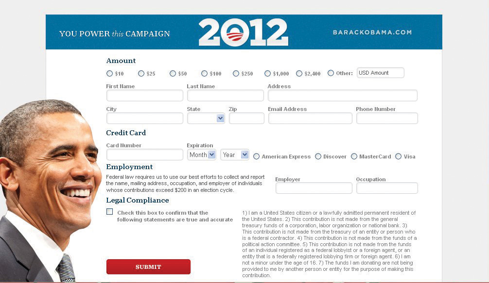

After reading this section, you should be able to answer the following questions:
The party in governmentThe organized party members who serve in office, such as members of the Democratic and Republican parties in Congress. constitutes the organized partisans who serve in office, such as members of the Democratic and Republican parties in Congress. Parties provide an organizational structure for leaders in office, develop policy agendas, and ensure that majority and minority party opinions are voiced. The party in government seeks to represent its supporters, achieve policy objectives, and enhance the prospects for reelection. It is the center of democratic action. Party coalitions of many officeholders can be more powerful mechanisms for voicing opinions than individual leaders acting on their own. Coalitions from opposing parties spar openly by taking different positions on issues.Samuel J. Eldersveld and Hanes Walton Jr., Political Parties in American Society, 2nd ed. (Boston: Bedford/St. Martin’s, 2000).
The president is the official and symbolic leader of his party. Presidents can use this position to rally members of Congress to push their agendas as President Franklin Roosevelt did to get his New Deal programs passed quickly with the help of congressional Democrats. President Ronald Reagan mobilized congressional Republicans to enact the so-called Reagan revolution of conservative policies, such as cutting taxes and increasing defense spending. Other presidents prefer to adopt a policy of triangulation, where they work both sides of the congressional aisle.John Kenneth White and Daniel M. Shea, New Party Politics (Boston: Bedford/St. Martin’s, 2000). President Barack Obama successfully encouraged Democrats and Republicans in Congress to pass a bill extending tax cuts to citizens.
Figure 10.6 Organizing for America
President Barack Obama’s campaign organization, Organizing for America, continued to raise funds through its website following the 2008 election in anticipation of his reelection bid in 2012.
Source: http://www.barackobama.com/index.php.
Since the 1990s, presidents have assumed a major responsibility for party fundraising. President Bill Clinton made fundraising a priority for the Democratic Party. He was the headliner at major events that drew big crowds and raised millions of dollars. President George W. Bush became the top fundraiser for the Republican Party, raising a record $84 million in six months en route to achieving a $170 million goal by the 2004 presidential election.“Bush Campaign Has Raised Nearly $84 Million Since Last Spring,” Washington Post, October 14, 2003. During his campaign for the presidency, Barack Obama raised over $600 million mostly through online appeals. Once in office, President Obama continued to raise funds for Democratic Party candidates through appearances at dinners and events as well as through his campaign organization’s website, Organizing for America.Jose Antonio Vargas, “Obama Raised Half a Billion Online,” Washington Post, November 20, 2008, accessed March 26, 2011, http://voices.washingtonpost.com/44/2008/11/obama-raised-half-a-billion-on.html.
Legislative partiesThe internal party organizations within each house of Congress. are the internal party organizations within each house of Congress. The Speaker of the House and the Senate Majority Leader, the highest ranking leaders in Congress, are members of the majority party. They work closely with the majority leader, whip, chair of the policy committee, and chair of campaign committee in each body. The House and Senate minority leaders head a similar cast on the opposite side of the partisan fence. The Democratic Caucus and the Republican Conference, consisting of all members elected from a party, are the internal party organizations within each house of Congress. They oversee committee assignments and encourage party discipline by asking members to vote along party lines.
Party discipline can be difficult to enforce given the diversity of constituency interests and personalities in Congress. The extent to which party members are willing to vote in a block varies over time. Party unity in congressional voting rose from 40 percent in the early 1970s to 90 percent or more since 2000.
Congressional Voting Patterns
Congressional Quarterly, a Washington, DC–based publisher, has analyzed the voting patterns of members of Congress since 1953 and presents them in an interactive graphic.
Members of the same party in Congress are more similar ideologically in recent years than in the past. The Democratic Party in Congress contains few conservatives compared to the period before 1980, when conservative southern Democrats often disagreed with the liberal and moderate members of their party. Republicans in Congress today are more united in taking conservative positions than in the past.Larry Schwab, “The Unprecedented Senate: Political Parties in the Senate after the 2000 Election,” in The State of the Parties, ed. John C. Green and Rick Farmer (Lanham, MD: Rowman & Littlefield), 241–53.
Legislative parties like those in Congress are found in forty-nine of the fifty state legislatures. Nebraska, which has a nonpartisan, unicameral legislature, is the exception.
The American system of separation of powers and checks and balances devised by the framers presents some obstacles to elected officials using their party connections to wield power. Divided governmentA situation in which the chief executive is of a different political party from the majority in the legislature., which occurs when the chief executive is of a different party from the majority in the legislature, is a common occurrence in American government. Divided government can get in the way of cooperative policymaking. Presidential vetoes of legislation passed by Congress can be more frequent during periods of divided government.Gary W. Cox and Samuel Kernell, The Politics of Divided Government (Boulder, CO: Westview Press, 1991).
President Clinton faced the challenges of divided government beginning in 1994, when the Republicans took control of the House and Senate. Clinton did not use the veto power once when his Democratic Party controlled Congress between 1993 and 1994. After the Democrats lost fifty-two seats in Congress to Republicans as a result of the 1994 midterm elections, President Clinton used the veto to block legislation his party opposed, including tax bills that were central to the Republican Party’s platform. From 1995 to 2000, he vetoed thirty-six bills.Samuel B. Hoff, “Evaluating the Clinton Veto Record 1993–2001,” unpublished paper, Delaware State University, 2003. Democratic President Barack Obama was faced with divided government in 2010 when the Republican Party won the majority in the House of Representatives while the Democrats held the Senate by a small margin. Obama used the State of the Union address to call for the parties to work together on key issues, especially health care and the economy.Mike Dorning, “Obama Ushers in Era of Divided Government with Appeal for Unity, Progress,” Bloomberg, January 26, 2011, accessed March 26, 2011, http://www.bloomberg.com/news/2011-01-26/obama-ushers-in-era-of-divided- government-with-appeal-for-unity-progress.html.
The party in government constitutes the organized partisans who serve in office, such as members of the Democratic and Republican parties in Congress. The president is the symbolic leader of his political party and can use this position to urge party members to achieve policy goals. Legislative parties seek to impose discipline on party members in Congress, which is not always easily accomplished because members represent vastly different constituencies with particular needs. Divided government—periods when the president is of a different party from the majority in Congress—can create challenges for presidents seeking to enact their policy agendas.